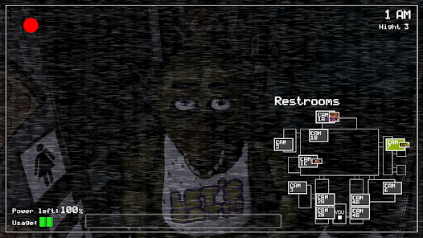
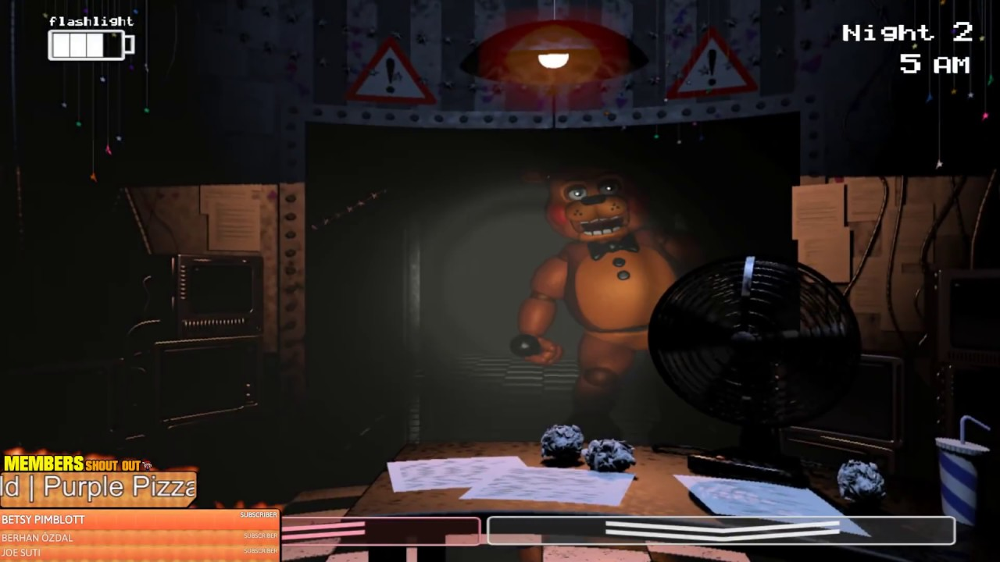
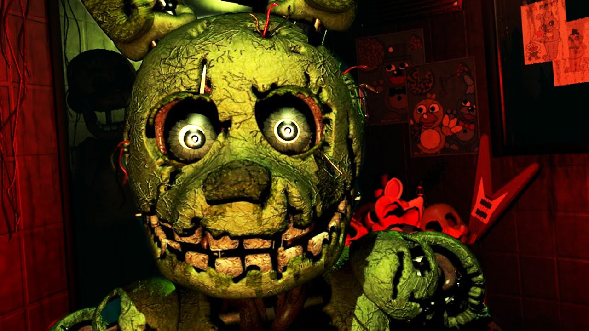
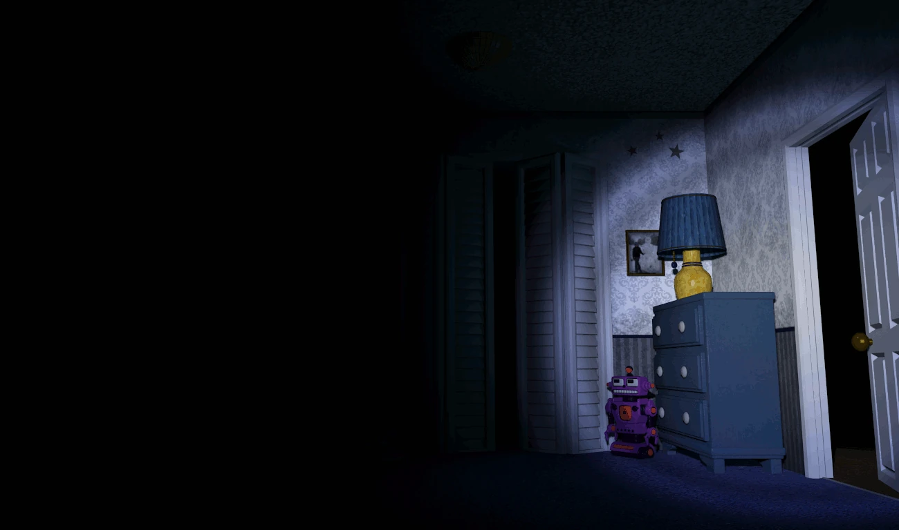
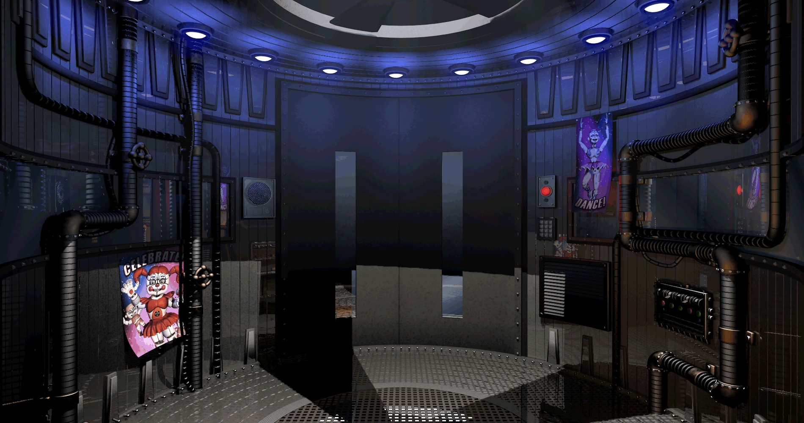
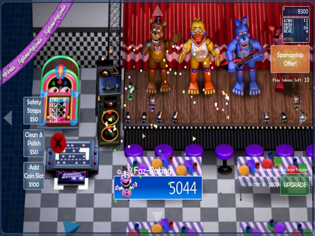
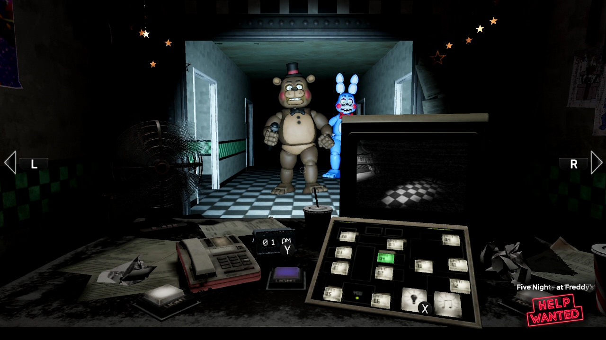
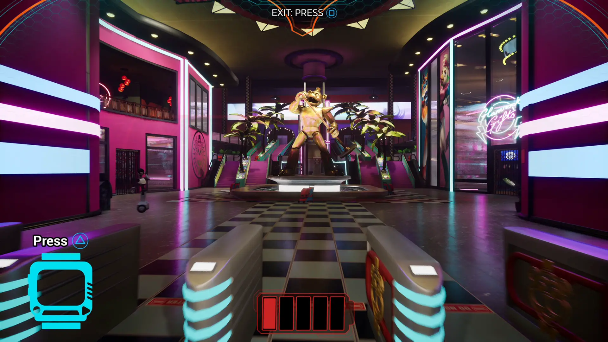

"Five Nights at Freddy's" (FNaF) é uma série de jogos de terror criada por Scott Cawthon que rapidamente se tornou uma sensação entre os entusiastas de jogos e fãs de horror. A saga se desdobra em torno de locais sinistros, como pizzarias animatrônicas assombradas, onde o jogador assume o papel de um guarda de segurança que enfrenta ameaças de animais robóticos durante cinco noites. Com uma história intrigante e cheia de mistérios, a saga FNaF se expandiu para livros, quadrinhos e até mesmo teorias de fãs profundamente envolventes, cativando uma base de fãs leal e ávida por desvendar os segredos por trás desses enigmáticos personagens.
Em "Five Nights at Freddy's 1" (FNaF), o jogador assume o papel de um guarda de segurança noturno em uma pizzaria chamada Freddy Fazbear's Pizza. A mecânica principal do jogo envolve sobreviver a cinco noites, cada uma representando um turno de trabalho, onde o jogador deve monitorar as câmeras de segurança para acompanhar o movimento dos animatrônicos.
Os animais robóticos, Freddy Fazbear, Bonnie the Bunny, Chica the Chicken e Foxy the Pirate Fox, perambulam pelo restaurante à noite e têm comportamentos peculiares, incluindo tentativas de se aproximar e atacar o jogador. O objetivo é evitar que eles entrem na sala do guarda, usando portas e luzes para se defender e mantendo um olho nas câmeras para rastrear seus movimentos.
A atmosfera do jogo é de crescente tensão, já que os animatrônicos se tornam mais agressivos e imprevisíveis a cada noite. FNaF 1 é conhecido por sua jogabilidade simples, mas intensa, e por sua narrativa sutil, que dá dicas e pistas sobre a história por meio de mensagens e eventos ocultos, instigando os jogadores a desvendar os mistérios por trás da pizzaria assombrada.
Em "Five Nights at Freddy's 2" (FNaF 2), a história continua em uma nova localização: uma versão renovada da pizzaria original, agora chamada de "Freddy Fazbear's Pizza - The New and Improved". O jogo se passa em uma época anterior à do primeiro jogo, agindo como uma espécie de prequela.
Neste capítulo, o jogador assume o papel de um guarda de segurança novamente, mas o método de defesa é diferente. Não há portas para se proteger, em vez disso, há uma máscara que pode ser usada para evitar ser atacado pelos animatrônicos. Além disso, o jogador precisa monitorar as câmeras para observar os novos personagens, que incluem versões "toy" dos animatrônicos anteriores e outros personagens adicionais.
A mecânica de jogo é mais complexa do que no primeiro jogo, exigindo uma gestão mais ativa dos recursos para evitar ser atacado. Há também novos elementos de jogabilidade, como a manutenção de um sistema de energia limitado e a necessidade de manter uma música específica para acalmar um dos personagens.
FNaF 2 expande significativamente a história da série, introduzindo novos elementos narrativos e revelando mais detalhes sobre a misteriosa origem dos animatrônicos e da própria pizzaria. A atmosfera de suspense e terror continua a ser um ponto forte, mantendo os jogadores imersos na tentativa de sobreviver às várias noites e descobrir os segredos ocultos dentro do jogo.
Claro, em "Five Nights at Freddy's 3" (FNaF 3), a história se desenrola em um cenário completamente novo. Este capítulo se passa em Fazbear's Fright, um horror attraction baseado nos eventos e personagens lendários das pizzarias anteriores.
O jogador assume o papel de um guarda noturno encarregado de supervisionar a atração. A mecânica de jogo é ligeiramente diferente dos títulos anteriores. Aqui, a defesa contra os animatrônicos é feita principalmente através de um sistema de câmeras de segurança e dispositivos eletrônicos, já que não há portas ou máscaras protetoras como nos jogos anteriores.
O jogo introduz um único animatrônico principal, Springtrap, uma versão deteriorada de um dos personagens anteriores. A atmosfera é mais tensa do que nunca, com a adição de uma mecânica de jogabilidade onde o jogador precisa manter sistemas críticos funcionando enquanto evita ser capturado por Springtrap.
FNaF 3 aprofunda a história da série, revelando mais detalhes sobre os eventos passados e o destino dos personagens. Além disso, apresenta elementos de quebra-cabeça e mistério mais intrincados, desafiando os jogadores a explorar e decifrar enigmas para desvendar completamente a narrativa por trás da atração assombrada.
Em "Five Nights at Freddy's 4" (FNaF 4), a saga retorna a uma narrativa mais centrada em um ambiente doméstico. O jogo se passa na casa de uma criança, cujos medos e pesadelos são explorados em torno dos animatrônicos aterrorizantes.
Diferente dos jogos anteriores, o jogador não assume o papel de um guarda de segurança, mas sim do próprio personagem infantil, imerso em um mundo de terror onde os animatrônicos se tornam ameaças à sua sobrevivência. O jogo ocorre em diferentes locais da casa, como o quarto e o corredor, onde o objetivo é evitar ser atacado pelos animatrônicos enquanto se mantém vivo até o amanhecer.
A jogabilidade se concentra em ouvir e observar sinais auditivos e visuais que indicam a presença dos animatrônicos, utilizando estratégias específicas para se defender contra eles, como fechar portas e segurar a porta do quarto para afastá-los.
FNaF 4 é conhecido por sua atmosfera opressiva e assustadora, explorando os temores de uma criança e aprofundando a mitologia por trás dos animatrônicos. A história se conecta aos eventos anteriores da série, revelando mais pistas e detalhes sobre o passado e o mistério que envolve esses personagens assustadores.
"Five Nights at Freddy's: Sister Location" é o quinto jogo principal da série e introduz uma reviravolta significativa na fórmula dos jogos anteriores. Neste capítulo, o jogador não está mais preso em um escritório fixo, mas em vez disso, explora diferentes áreas dentro de uma nova instalação chamada Circus Baby's Entertainment and Rental.
O enredo se concentra em um técnico de manutenção que é contratado para realizar tarefas específicas em cada noite dentro da instalação. A principal animatrônica é Circus Baby, uma nova adição à galeria de personagens, junto com outros animatrônicos como Ballora, Funtime Freddy e Funtime Foxy.
A jogabilidade é mais variada, incluindo sequências de deslocamento entre salas e interação direta com os animatrônicos em algumas situações. Além disso, há uma ênfase maior na narrativa, com cutscenes e diálogos que contribuem para a compreensão da história geral da série.
"Five Nights at Freddy's: Sister Location" aprofunda ainda mais a mitologia da série e revela informações cruciais sobre os eventos passados e a verdadeira natureza dos animatrônicos. O jogo também introduz novos elementos de jogabilidade e desafios, mantendo a atmosfera intensa e a narrativa misteriosa que caracterizam a série FNaF.
"Freddy Fazbear's Pizzeria Simulator" é um jogo único na série "Five Nights at Freddy's" (FNaF), pois combina elementos de simulador de gerenciamento com os tradicionais aspectos de terror da franquia. O jogo é uma experiência mais complexa do que os títulos anteriores.
Ao contrário dos jogos anteriores, onde o objetivo principal era sobreviver às investidas dos animatrônicos, neste jogo, o jogador assume o papel de um proprietário de uma pizzaria e é encarregado de administrar e desenvolver o seu próprio estabelecimento.
O jogo se desenrola em fases distintas: há elementos de gerenciamento financeiro, onde o jogador deve gastar dinheiro para comprar equipamentos e atrações para a pizzaria. Além disso, há seções em que o jogador deve jogar minigames para ganhar dinheiro e manter a reputação da pizzaria.
Contudo, o elemento de horror ainda está presente. O jogador precisa lidar com a possibilidade de ser atacado pelos animatrônicos, que podem aparecer durante a jogabilidade. Esses momentos são tensos e imprevisíveis, mantendo a atmosfera de suspense característica da série.
"Freddy Fazbear's Pizzeria Simulator" também contribui significativamente para a narrativa geral da série, revelando informações importantes sobre a história por meio de eventos específicos do jogo e de pistas encontradas ao longo da jogabilidade. É uma adição intrigante à saga FNaF, combinando elementos de simulação de negócios com o suspense e os mistérios que os fãs da série já conhecem e adoram.
"Five Nights at Freddy's: Help Wanted" é um jogo de realidade virtual (VR) que recria cenários icônicos da série FNaF em um ambiente imersivo. Os jogadores enfrentam desafios e minigames aterrorizantes, revivendo momentos assustadores da franquia enquanto exploram uma narrativa expandida. Oferecendo uma experiência intensa tanto em VR quanto em modos não-VR, o jogo proporciona uma imersão profunda no mundo assombrado de Freddy Fazbear.
"Five Nights at Freddy's: Security Breach" é o mais recente jogo da série FNaF, levando os jogadores a explorar um grande complexo de entretenimento. Com gráficos atualizados e uma jogabilidade mais expansiva, os jogadores mergulham em um ambiente 3D, enfrentando novos desafios e interagindo com versões renovadas dos animatrônicos. A história se desenrola em um cenário amplo e diversificado, oferecendo uma experiência imersiva enquanto os jogadores tentam desvendar os mistérios por trás do complexo e escapar dos perigos que o cercam.
